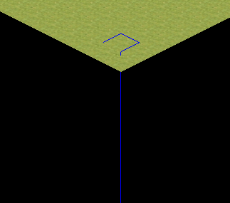

Taqer
Hi I wanted to draw a simple bordered quad (no fill) with custom geometry, but I can’t get it to look right, I got some weird line that goes down to negative infinity I guess:

My code:
quad = scene->CreateChild();
CustomGeometry* cg = quad ->CreateComponent<CustomGeometry>();
cg->Clear();
cg->SetNumGeometries(1);
cg->BeginGeometry(0, PrimitiveType::LINE_STRIP);
cg->DefineGeometry(0, PrimitiveType::LINE_STRIP, 4, false, true, false, false);
cg->DefineVertex(Vector3(0, 0.1f, 0));
cg->DefineColor(Color::BLUE);
cg->DefineVertex(Vector3(1, 0.1f, 0));
cg->DefineColor(Color::BLUE);
cg->DefineVertex(Vector3(1, 0.1f, 1));
cg->DefineColor(Color::BLUE);
cg->DefineVertex(Vector3(0, 0.1f, 1));
cg->DefineColor(Color::BLUE);
Material* mat = new Material(context_);
auto teq = cache->GetResource<Technique>("Techniques/NoTextureUnlitVCol.xml");
mat->SetTechnique(0, teq);
cg->SetMaterial(mat);
cg->Commit();
I tried changing LINE_STRIP to LINE_LIST, and adding 5. vertex same as first vertex, I got a quad but still there is a line that goes down.